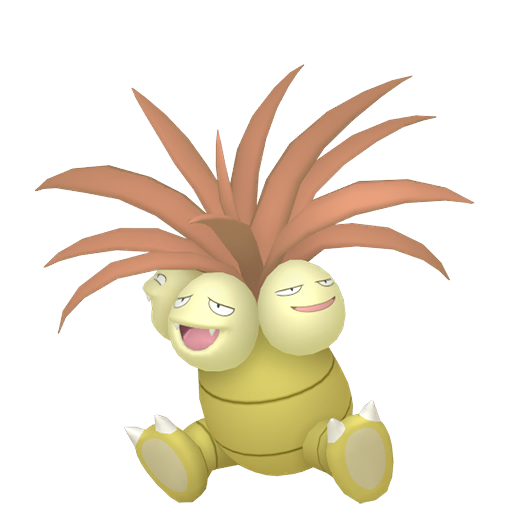
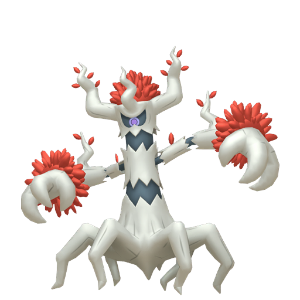

Qu'est-ce que la méthode SOS en Shiny Hunting ?
La méthode SOS est une technique de chasse aux Pokémon chromatiques (shiny) uniquement disponible dans les jeux de la septième génération soient Soleil et Lune et Ultra-Soleil et Ultra-Lune.
Elle consiste à faire apparaître des Pokémon spécifiques et les éliminer à la chaîne pour augmenter
les chances de rencontrer un Pokémon shiny.
Préparation de la shasse
Le Pokemon
Il vous faudra un pokemon ayant le talent récolte, l'attaque échange et l'attaque Tourmagik ou passe-cadeau.
Il faudra également que votre pokemon tienne la baie Mepo.
| Pokemon talent récolte |
Echange |
Tourmagik |
Passe-Cadeau |
Noeunoeuf |
- Oui par reproduction dans SL
- Oui par Maitre des Capacités
et reproduction dans USUL |
Non |
Oui au niveau 50 |

Noadkoko / Noadkoko D'alola |
- Oui par reproduction dans SL
- Oui par Maitre des Capacités
et reproduction dans USUL |
Non |
Non |

Brocélôme |
Oui uniquement dans USUL
par Maitre des Capacités |
Oui uniquement dans USUL
par Maitre des Capacités |
Oui par reproduction |

Desséliande |
Oui uniquement dans USUL
par Maitre des Capacités |
Oui uniquement dans USUL
par Maitre des Capacités |
Oui par reproduction |
*USUL = Ultra-Soleil et Ultra-Lune
*SL = Soleil et Lune
A noter : Il est également mieux d'avoir un pokemon ayant l'attaque Faux-Chage
que vous enverrez au combat une fois l'attaque échange et l'attaque Tourmagik ou passe-cadeau utilisé.
Objets
Vous devrez acheter un petit stock d'orbre frousse  disponible dans tous les centres Pokémon. Il servira à augmenter les chances d'appel à l'aide du pokemon.
disponible dans tous les centres Pokémon. Il servira à augmenter les chances d'appel à l'aide du pokemon.
Prévoir aussi un stock de soin pour soigner votre pokemon.
Le charme Chroma  est un bonus à avoir afin d'augmenter les chances de trouver un pokemon shiny.
est un bonus à avoir afin d'augmenter les chances de trouver un pokemon shiny.
Déroulement de la shasse :
- 1 - Envoyé tout d'abord votre pokemon avec le talent récolte et tenant la baie Mepo.
- 2 - Utilisé l'attaque échange afin de donner votre talent récolte au pokemon adverse.
- 3 - Utilisé l'attaque Tourmagik ou Passe-Cadeau pour donner votre baie Mepo au pokemon adverse.
(À ce stade, votre pokemon adverse ne peut plus tomber KO par manque de PP sur ses attaques)
- 4 - Envoyer votre ayant l'attaque Faux-Chage.
- 5 - Utilisé l'attaque Faux-Chage sur le pokemon adverse pour qu'il soit à 1 PV.
- 6 - Utilisé l'objet "Orbre Frousse" afin d'augmenter les chances d'appel à l'aide.
- 7 - Tuer en boucle le Pokémon appelé à l'aide jusqu'à obtenir le shiny !